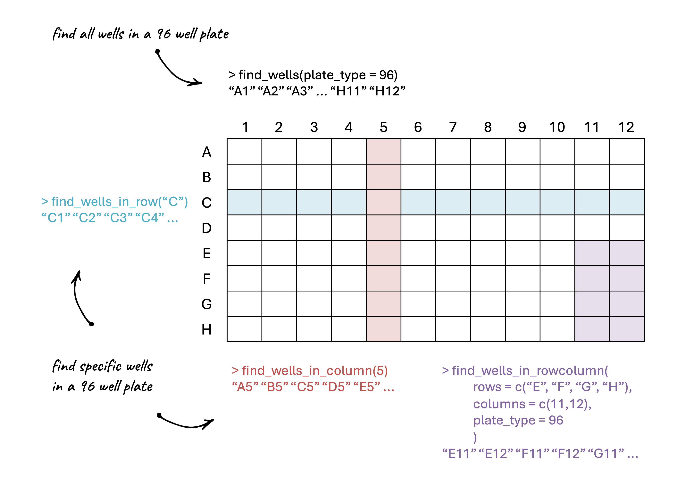

Plate formatting functions
Source:vignettes/plate_formatting_functions.Rmd
plate_formatting_functions.RmdFunctions like find_wells_in_row(),
find_wells_in_column(), and
find_wells_in_rowcolumn() are helper functions that can be
useful for avoiding manually writing out lists of wells when processing
experimental data.

find_wells_in_row(rows = c("A", "D"), plate_type = 96)## [1] "A1" "A2" "A3" "A4" "A5" "A6" "A7" "A8" "A9" "A10" "A11" "A12"
## [13] "D1" "D2" "D3" "D4" "D5" "D6" "D7" "D8" "D9" "D10" "D11" "D12"
find_wells_in_column(columns = c(1,2), plate_type = 24)## [1] "A1" "A2" "B1" "B2" "C1" "C2" "D1" "D2"
find_wells_in_rowcolumn(rows = c("A", "B"), columns = c(1, 11,12), plate_type = 96)## [1] "A1" "A11" "A12" "B1" "B11" "B12"There is also find_wells() which lets you print
all of the wells in a given plate type.
find_wells(plate_type = 96)## [1] "A1" "A2" "A3" "A4" "A5" "A6" "A7" "A8" "A9" "A10" "A11" "A12"
## [13] "B1" "B2" "B3" "B4" "B5" "B6" "B7" "B8" "B9" "B10" "B11" "B12"
## [25] "C1" "C2" "C3" "C4" "C5" "C6" "C7" "C8" "C9" "C10" "C11" "C12"
## [37] "D1" "D2" "D3" "D4" "D5" "D6" "D7" "D8" "D9" "D10" "D11" "D12"
## [49] "E1" "E2" "E3" "E4" "E5" "E6" "E7" "E8" "E9" "E10" "E11" "E12"
## [61] "F1" "F2" "F3" "F4" "F5" "F6" "F7" "F8" "F9" "F10" "F11" "F12"
## [73] "G1" "G2" "G3" "G4" "G5" "G6" "G7" "G8" "G9" "G10" "G11" "G12"
## [85] "H1" "H2" "H3" "H4" "H5" "H6" "H7" "H8" "H9" "H10" "H11" "H12"
find_wells(plate_type = 24)## [1] "A1" "A2" "A3" "A4" "A5" "A6" "B1" "B2" "B3" "B4" "B5" "B6" "C1" "C2" "C3"
## [16] "C4" "C5" "C6" "D1" "D2" "D3" "D4" "D5" "D6"The most common use case for these functions is when you use
process_plate() to process data from a plate experiment.
Say you have your blank wells in column 11, and your negative wells in
rows G-H, columns 1-4:
processed_data <- process_plate(
data_csv = "data/example_experiment_parsed.csv",
blank_well = find_wells_in_column(11),
od_name = "OD700",
flu_channels = c("blue"),
af_model = "spline",
neg_well = find_wells_in_rowcolumn(rows = c("G", "H"), columns = c(1,2,3,4)),
outfolder = "experiment_analysis"
)Similarly, in calc_fppercell() when you are given the
option to remove wells unneeded in the analysis, such as those that
contain media or that were empty, you can use these functions to save a
lot of typing.
pc_data_mTagBFP2 <- calc_fppercell(
data_csv = "experiment_analysis/example_experiment_parsed_processed.csv",
flu_channels = c("blue"),
flu_labels = c("mTagBFP2"),
remove_wells = c(find_wells_in_column(11), # media
find_wells_in_column(c(1,12)) # empty wells
),
outfolder = "experiment_analysis"
)